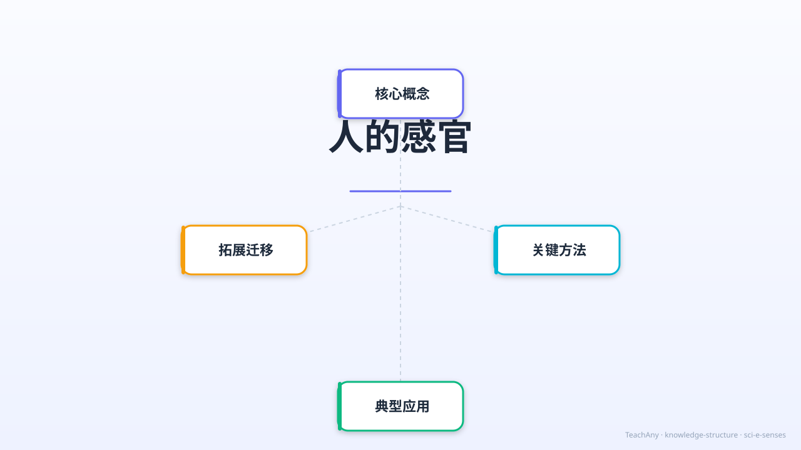

眼耳鼻舌皮肤——五种神奇感官，帮助我们感知和探索这个美丽的世界
↓ 开始探索

从日常生活出发，感受感官的神奇力量
你每天都在使用身体的感官：你能看到五彩缤纷的世界，听到美妙的音乐，闻到香喷喷的饭菜，尝到各种食物的味道，感受到风的轻抚……这些都是你与生俱来的能力，你已经习以为常。
但是，你有没有想过：为什么你能看到颜色，而很多动物看到的却是黑白世界？为什么感冒鼻塞的时候，食物好像也变得没有味道了？为什么在漆黑的房间里，你能通过声音判断方向，却看不清物体的形状？感官真的可靠吗？我们的眼睛会被"骗"吗？
因此，今天我们将深入探索人体的五种感官：视觉、听觉、嗅觉、味觉和触觉。了解每种感官对应的器官是什么，它们是如何工作的，有什么局限性，以及我们应该如何保护它们。用科学的眼光认识自己的身体！
每种感官都有专属器官，承担独特的信息感知功能
能看到颜色、形状和远近。约80%的外界信息来自视觉，是最重要的感官。
能听到各种声音，辨别方向和远近。帮助我们交流和感知环境变化。
能闻到数千种不同的气味，帮助我们感知食物和环境。与味觉紧密相连。
能尝出甜、酸、苦、咸、鲜五种基本味道。舌头上有约10,000个味蕾。
最大的感觉器官。感受冷热、压力、疼痛和质感。手指尖触觉最灵敏。
通过动画深入理解五种感官的器官与功能
把感觉描述词与对应的感官配对——看你的反应速度！
点击左侧描述词，再点击右侧对应感官，完成配对。所有正确配对即可获得成就徽章！
将下方的物品/场景拖拽到相应感官的区域中
测试你对五种感官的掌握程度
感官一旦受损很难恢复，日常好习惯至关重要
探索本节知识在生命科学体系中的位置
完成互动环节，解锁专属徽章！
完成感官配对游戏、拖拽练习和答题测验，逐步解锁全部6个成就徽章！
今天我们学习了人体的五种感官，掌握了它们的器官、功能和保护方法
眼睛 · 看颜色形状
约80%信息来源
耳朵 · 听各种声音
辨别方向距离
鼻子 · 闻数千种气味
与味觉紧密相连
舌头 · 甜酸苦咸鲜
约10,000个味蕾
皮肤（最大器官）
手指尖最灵敏